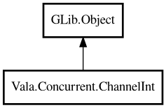

ChannelInt
Object Hierarchy:

Description:
public class ChannelInt : Object
Thread-safe message-passing channel inspired by Go channels.
ChannelInt provides a typed, thread-safe communication mechanism between threads. It supports both unbuffered (synchronous) and buffered
(asynchronous up to capacity) modes.
In unbuffered mode (default), send blocks until a receiver calls receive, providing strict rendezvous semantics. Only one sender can be
in flight at a time.
Example (unbuffered):
var ch = new ChannelInt ();
new Thread<void *> ("sender", () => {
ch.send (42);
return null;
});
int val = ch.receive ();
Example (buffered):
var ch = ChannelInt.buffered (10);
ch.send (1);
ch.send (2);
int v1 = ch.receive ();
int v2 = ch.receive ();
Content:
Static methods:
Creation methods:
Methods:
- public int capacity ()
Returns the buffer capacity. 0 means unbuffered.
- public void close ()
Closes the channel. No more values can be sent. Pending receives will
drain remaining values, then return 0 for subsequent calls.
- public bool isClosed ()
Returns whether the channel is closed.
- public int receive ()
Receives a value from the channel, blocking until one is available.
Returns the default value (0) if the channel is closed and empty.
- public void send (int value)
Sends a value into the channel. For buffered channels, blocks if the
buffer is full. For unbuffered channels, blocks until a receiver calls receive (strict rendezvous: only one sender in flight at a
time). Logs a warning and returns if the channel is closed.
- public int size ()
Returns the number of items currently in the buffer.
- public IntBox? tryReceive ()
Tries to receive a value without blocking.
- public bool trySend (int value)
Tries to send a value without blocking.
Inherited Members:
All known members inherited from class GLib.Object
- @get
- @new
- @ref
- @set
- add_toggle_ref
- add_weak_pointer
- bind_property
- connect
- constructed
- disconnect
- dispose
- dup_data
- dup_qdata
- force_floating
- freeze_notify
- get_class
- get_data
- get_property
- get_qdata
- get_type
- getv
- interface_find_property
- interface_install_property
- interface_list_properties
- is_floating
- new_valist
- new_with_properties
- newv
- notify
- notify_property
- ref_count
- ref_sink
- remove_toggle_ref
- remove_weak_pointer
- replace_data
- replace_qdata
- set_data
- set_data_full
- set_property
- set_qdata
- set_qdata_full
- set_valist
- setv
- steal_data
- steal_qdata
- thaw_notify
- unref
- watch_closure
- weak_ref
- weak_unref